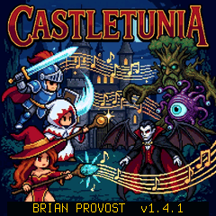
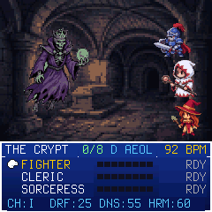
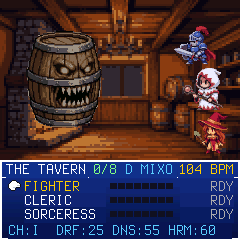
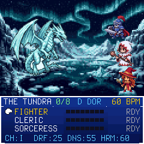
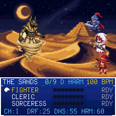
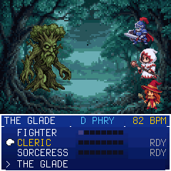
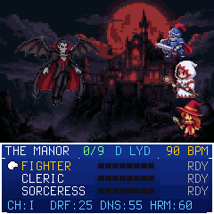
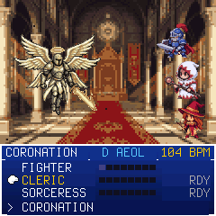
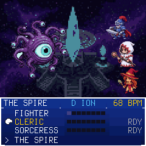
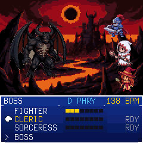

Generative Dungeon-Synth & 16-Bit RPG Battle Soundtrack Firmware for M-VAVE FM-1
castletunia.fwsc (v1.1.0, FM-1)










SELECT to travel across 9 realms (Crypt, Tavern, Tundra, Sands, Glade, Castle, Coronation, Spire, Boss) — each with its own scale, chord progression, drum kit, Boss, and character timbres.1–16 notes on the 27-key scale keyboard (or MIDI In) to arm your Party. Hit PLAY/STOP to launch the 4-bar A / B / A / C battle loop: Fighter → Cleric → Sorceress step up in turn, firing flying notes at the Boss.> BOSS CHARGING!) culminates in a chord sting, lunge, ripple, and a 1-bar musical curse (half-time freeze, chromatic shift, snare flood, ghost notes, mirror reversal, and more).LFO for Haste, EDIT for Mirror, ARP for Shatter, SEQ for Resolve, and GLO for Toll. Tap FX / SEL / ENV to cycle Fighter / Cleric / Sorceress through Slow (turns into a Sloth, 2× bar length), Poison, Berserk, and Freeze (flashes for 1 s before audio kicks in so you can skip past states).OCT- while powering on to enter USB Rescue Mode anytime.Full manual & source code: github.com/provostprovost/castletunia